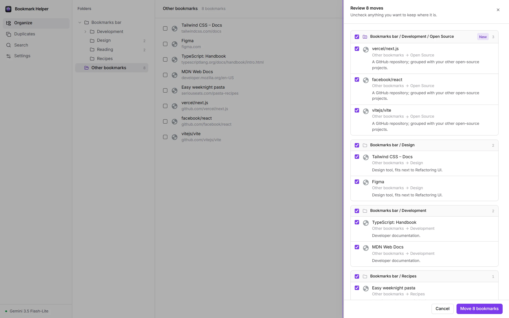
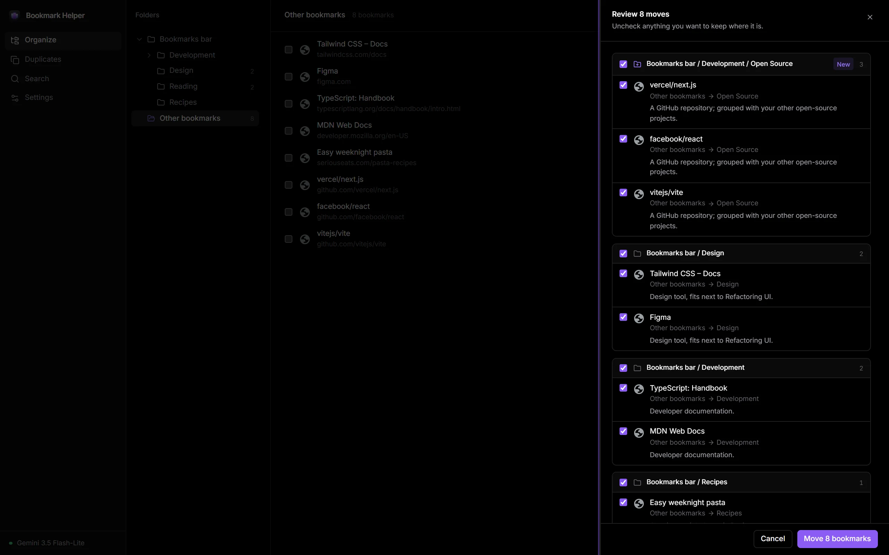
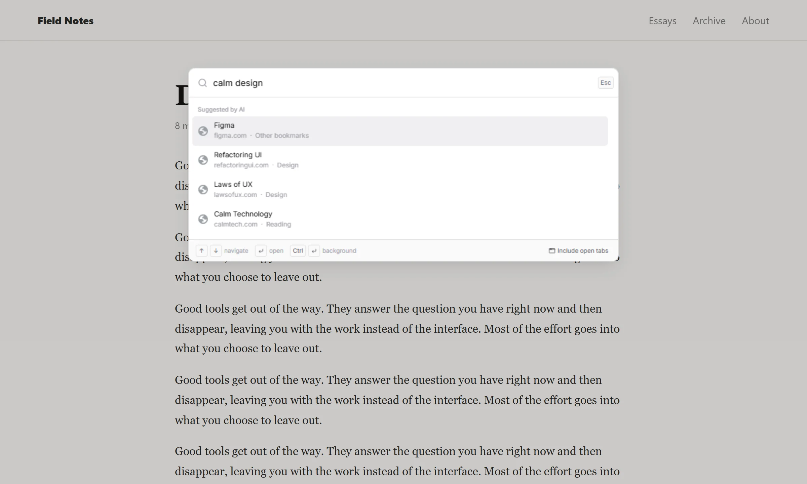
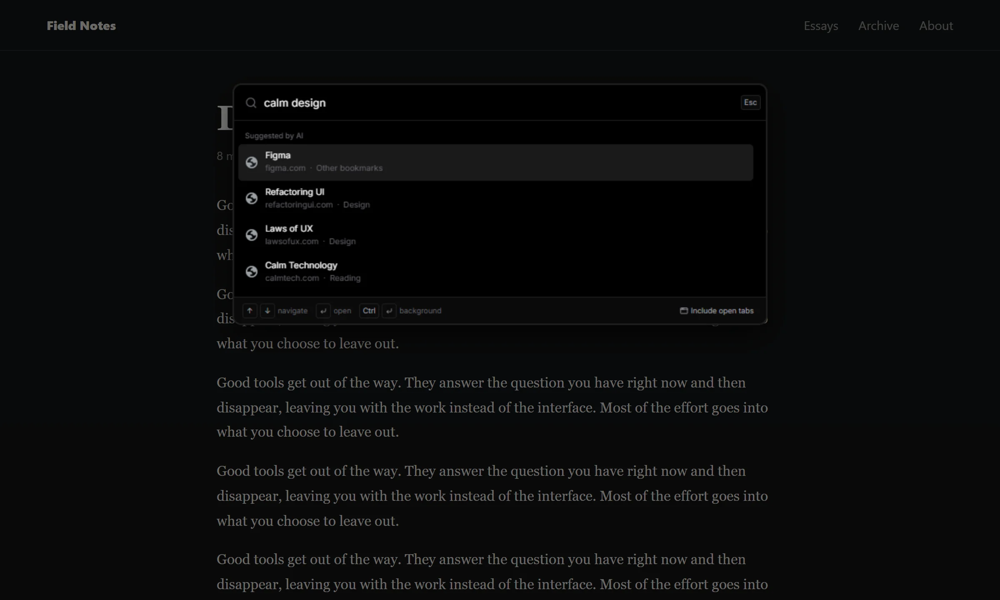
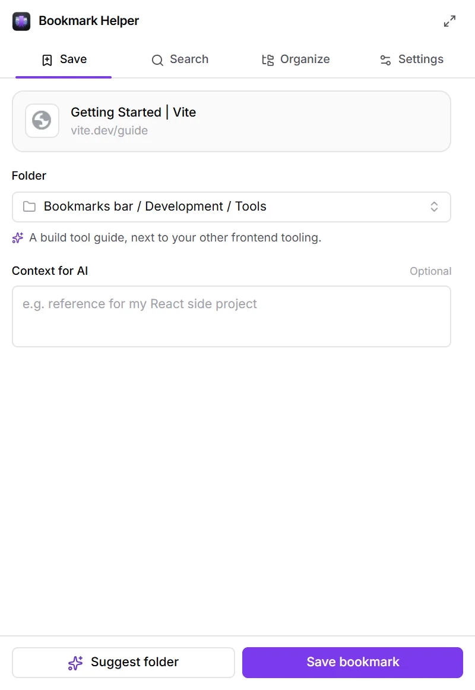
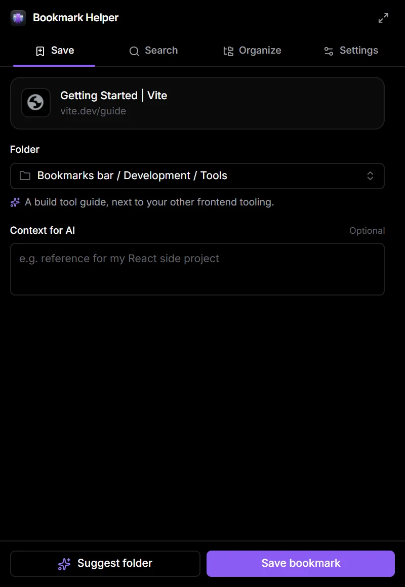

Bookmarks that file themselves.
Bookmark Helper suggests the right folder for every page, finds old bookmarks by what they were about, and cleans up duplicates. You review every change, and every change can be undone.
Works in Chrome, Edge and other Chromium browsers. Uses your own free Gemini API key.


Quick search
Find any bookmark without leaving the page.
Press the shortcut on any website and a search bar opens right where you are. Start typing and results appear instantly.
- Search by meaning. When nothing matches your words, AI looks for pages about what you typed.
- Jump to open tabs. Optionally include your open tabs and switch to one with Enter.
- Keyboard first. Arrow keys to move, Enter to open, Esc to close.
CtrlShiftK or ⌘ShiftK on Mac. You can change it.


Save
Every new bookmark lands in the right folder.
Click the extension on any page to get a folder suggestion with a short reason. Add a note like “for my React side project” to steer it.
- Prefers your folders. It suggests a new folder only when nothing you have fits.
- Auto-sort, if you want it. Bookmarks made with the star button are filed automatically, with an Undo button in the notification.
- Already saved? You see where the page is, and can move it in one click.


Organize
Tidy up years of bookmarks in minutes.
Let AI propose a cleaner structure for a messy folder, then keep only the moves you like.
Sort a whole folder
Suggested moves are grouped by destination. Uncheck any, or pick a different folder, before applying.
Undo everything
Moves and deletes can be undone right after. Folders created along the way are removed too.
Remove duplicates
Finds the same page saved twice, even with different tracking parameters, and keeps one copy.
Full-page manager
A folder tree with multi-select, shift-click ranges, bulk move and delete.
Right-click to save
Save any page or link straight to its suggested folder from the context menu.
Light and dark
Clean white or true black, or follow your system. Pick from six accent colors.
Get started
Set up in under a minute.
-
Install the extension
Get it from the Chrome Web Store. It also works in Edge and other Chromium browsers.
-
Add a Gemini API key
Create a free key in Google AI Studio, paste it in Settings and click Test.
-
Start organizing
Click the extension on any page to save it, or press Ctrl Shift K to search.
Privacy
Your bookmarks stay yours.
There’s no account and no server of ours in between. The extension talks to Google’s Gemini API directly, and only when an AI feature runs.
Your key stays in your browser
Your API key and settings are stored locally. They aren’t synced or sent anywhere except Google’s API.
Nothing leaves without a reason
Bookmark titles, links and folder names go to Gemini only when you use AI, or when auto-sort files a new bookmark.
No tracking
No analytics, no telemetry, no ads. Site icons come from your browser’s own cache.
Open source
Every line is on GitHub, so you can check exactly what it does.
FAQ
Questions
Is it free?
Yes. The extension is free and open source. AI features use your own Gemini API key; keys are free to create in Google AI Studio, which includes a free usage tier.
Do I need an API key to use it?
Only for AI features. Search, the folder picker, duplicate cleanup, the organizer and quick search all work without one.
Will it move my bookmarks without asking?
Only bookmarks you create with the browser’s star button, and only if auto-sort is on. You can turn it off in Settings. Each auto-sort shows a notification with Undo. Everything else is shown for review first.
Which browsers does it support?
Chrome, Microsoft Edge and other Chromium-based browsers such as Brave, Arc and Vivaldi.
How do I change the quick search shortcut?
Open chrome://extensions/shortcuts, or click “Change” next to the shortcut in the extension’s Settings.
Give your bookmarks a home.
Free, open source, and set up in under a minute.